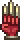
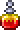
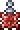
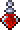
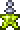

Воин (warrior) - это класс использующий оружие ближнего боя ,а именно мечи, оружие на цепи, копья и подобное. Для игры за воина важно иметь большой показатель защиты и ХП. У этого класса стабильный показатель урона, главная его роль в мультиплеере - это отвлечение врагов на себя для защиты более слабых классов.
 | Мечи |
 | Копья |
 | Оружие на цепи |
| Кинжалы | |
 | Бумернаги |
| Йо-йо | |
| Турнирные копья |
Лучшим модификатором на оружие для воина является -
легендарный (атака +15%, скорость +10%, шанс крит. удара +5%, размер +10%, отбрасывание +15%).
Лучшим оружием:
 Зенит (Zenith)
Зенит (Zenith)
Мяумур (Meowmere)
 Террариан (Terrarian)
Террариан (Terrarian)
 Звёздный гнев (Star Wrath)
Звёздный гнев (Star Wrath)
| Изображение | Название | Эффекты |
|  | Перчатки берсерка |
|
 | Небесная ракушка |
|
Щит анха |
|
|
 | Эмблема воина |
|
Глаз голема |
|
|
Эмблема мстителя |
|
|  | Зелье ярости – увеличивает шанс крит. удара на 10%. |
|  | Зелье гнева – увеличивает наносимый урон на 10%. |
 | Зелье железной кожи – увеличивает защиту на 8 ед. |
| Зелье регенерации – ускоряет регенерацию здоровья. | |
 | Зелье выносливости – уменьшает получаемый урон на 10%. |
|  | Зелье жизненной силы – увеличивает максимальный запас здоровья на 20%. |
|  | Зелье шипов – наносит 100% урона от атаки противника врагам, которые вступают в контакт с игроком. |